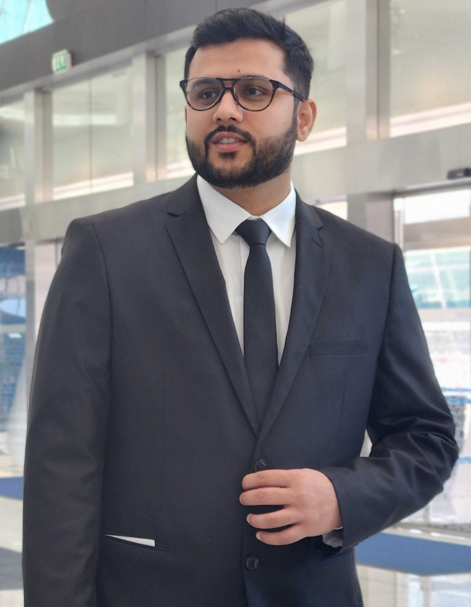

ORCID
Persistent researcher identifier and publication record.
0000-0001-8131-3129About & Contact
I am a mechanical engineer and gait-biomechanics researcher based at Khalifa University in Abu Dhabi.

Biography
I am a PhD candidate in Engineering, specializing in Mechanical Engineering, at Khalifa University of Science and Technology. My research focuses on gait biomechanics, subject-specific musculoskeletal modeling, statistical shape modeling and AI-informed analysis of sex-specific anatomy.
My doctoral work investigates how pelvic and femoral geometry, model personalization and anatomical representation influence gait simulations, internal joint loading and muscle-force estimates. I combine computational modeling with experience in synchronized experimental and clinical gait-data collection.
I have contributed to a multimodal gait dataset at the Khalifa University Gait Laboratory and supported clinical gait studies involving adults with stroke at Cleveland Clinic Abu Dhabi and children with cerebral palsy at Sheikh Khalifa Medical City. Earlier in my training, I worked on concentrated solar thermal systems and wind-resource assessment.
My PhD is expected to be completed in May 2027 under the supervision of Prof. Marwan El-Rich.
Contact
For research, collaboration and postdoctoral opportunities, use either email address below.
Scholarly profiles
Use these services for indexed publications, citation information and persistent researcher identification.
Persistent researcher identifier and publication record.
0000-0001-8131-3129Publication record and citation overview.
Open profileScopus-indexed author and publication profile.
Author ID 59358444300Website source and future research-code repositories.
MuhammadAbdullahPHDProfile update in progress. A link will be added after the research profile is finalized.
Learn more about female gait biomechanics, model personalization and clinical movement analysis.